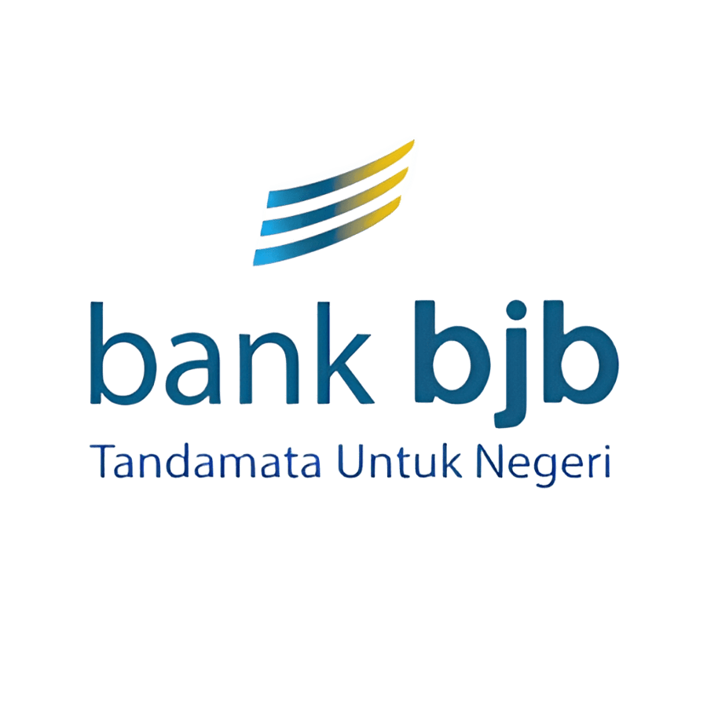

Akuntansi dan Keuangan Lembaga
Deskripsi
Akuntansi adalah ilmu proses mencatat dan merangkum informasi finansial yang berkaitan dengan semua transaksi
dan kejadian di perusahaan atau organisasi, serta menyajikan informasi tersebut untuk dipahami oleh penggunanya,
baik pihak internal maupun pihak eksternal.
Kompetensi Keahlian Akuntansi dan Keuangan Lembaga di SMK Negeri 1 Subang menyiapkan lulusan berkualitas dan
kompetitif dalam bidang pembukuan/administrasi keuangan dan akuntansi dengan berbagai keterampilan dan kompetensi
dalam bidang akuntansi dan keuangan di berbagai perusahaan/instansi baik perusahaan jasa, dagang, manufaktur
maupun lembaga/instansi pemerintah.
Kompetensi Dasar
- Etika Profesi
- Aplikasi Pengolah Angka / Spreadsheet
- Akuntansi Dasar
- Perbankan Dasar
- Praktikum Akuntansi Perusahaan Jasa, Dagang, dan Manufaktur
- Praktikum Akuntansi Lembaga / Instansi Pemerintah
- Akuntansi Keuangan
- Komputer Akuntansi
- Administrasi Pajak
- Produk Kreatif dan Kewirausahaan
Tujuan Pembelajaran
Tujuan Kompetensi Keahlian Akuntansi dan Keuangan Lembaga secara umum mengacu pada isi Undang-Undang Sistem
Pendidikan Nasional (UU SPN) pasal 3 mengenai Tujuan Pendidikan Nasional dan penjelasan pasal 15 yang
menyebutkan bahwa pendidikan kejuruan merupakan pendidikan menengah yang mempersiapkan peserta didik
terutama untuk bekerja dalam bidang tertentu.
Secara khusus tujuan Kompetensi Keahlian Akuntansi dan Keuangan Lembaga adalah membekali peserta didik
dengan keterampilan, pengetahuan dan sikap agar kompeten dalam:
- Bekerja baik secara mandiri atau mengisi lowongan pekerjaan yang ada di dunia usaha dan dunia industri
sebagai tenaga kerja tingkat menengah dalam bidang Akuntansi dan Keuangan Lembaga; - Memilih karir, berkompetensi, dan mengembangkan sikap profesional dalam bidang Akuntansi dan Keuangan Lembaga;
- Memiliki kompetensi sesuai jenjang dalam bidang Akuntansi dan Keuangan Lembaga.
Tenaga Pengajar Produktif
- Siti Maryam, S.Pd.
- Pepen Apendi, S.Pd., M.Pd.I
- Ismiyanti, S.Pd
- Dani Nur Muhamad, S.E.
- Rikawati, S.Mn.
- Tina Mulayyinatun Nisa, S.Pd.
- Iis Ismawati, S.Pd.
- Putri Maulida Hutami, S.Pd.
Institusi Pasangan
 |
 |